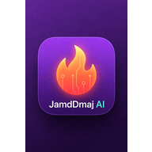

✦
DisponibleAsistente JamdDmaj AI
Pregunta, analiza imágenes, organiza proyectos y recibe explicaciones adaptadas a tu idioma.
¿Qué riesgo tiene este movimiento?Revisemos tendencia, volumen y escenarios sin garantizar el futuro.

JamdDmaj AIOne group. Every system.JamdDmaj reúne asistencia con IA, educación, datos de mercado, wallets no custodiales y un laboratorio Fair Launch en una sola experiencia.
Sin pedir frases de recuperación. Sin promesas de ganancias. Tú mantienes el control.
Escenario técnico, riesgos, volumen y noticias en un solo lugar.
Cada espacio está diseñado para ayudarte a entender antes de actuar.
Pregunta, analiza imágenes, organiza proyectos y recibe explicaciones adaptadas a tu idioma.
Bitget, DEX Screener, gráficos interactivos, indicadores, métricas y noticias sin abandonar la app.
Conecta proveedores compatibles o consulta una dirección pública. JamdDmaj nunca recibe tus claves.
Rutas guiadas, sesiones y progreso para aprender IA, seguridad y fundamentos digitales.
Diseña Token-2022 con vesting, bloqueos, manifiestos y controles anti-rug antes de cualquier lanzamiento real.
Configuraciones educativas filtradas y monitoreo. Ninguna señal garantiza beneficios y el trading implica pérdidas.
Un recorrido animado, accesible y sin descargar ningún video.
La conexión comparte una dirección pública, no una frase de recuperación. Cualquier acción futura con valor deberá mostrar importe, comisión, deslizamiento y destino antes de pedir una firma.
Las claves permanecen en tu wallet.
Sin esconder comisiones ni prometer resultados.
Primero simulación y Devnet; mainnet exige auditoría y revisión legal.
No presentamos una idea futura como una función terminada.
Chat con IA, investigación interna, gráficos, noticias, wallet pública y proyectos.
Diseño, simulación y Devnet sin valor real mientras continúa la validación.
No hay venta activa. Requiere auditoría, revisión legal y configuración pública de comisiones.
Abre la app web desde cualquier dispositivo. No necesitas instalar nada para comenzar.